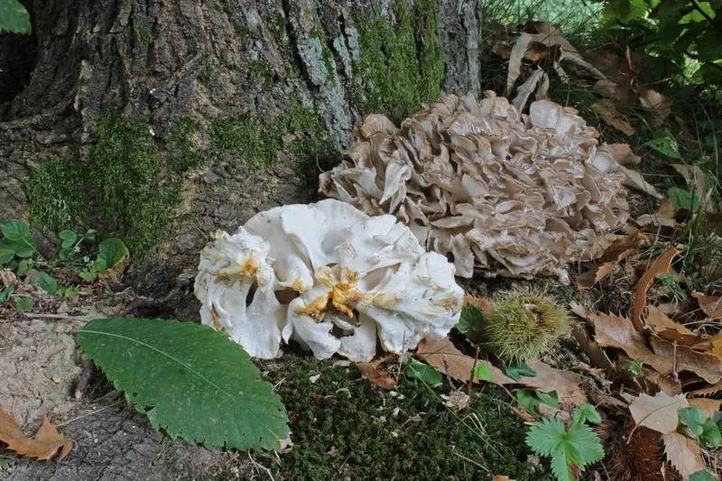

真菌 · 真菌界
灰树花 Grifola frondosa

由许多灰褐色小菌盖重叠成簇的木腐菌，形似盛开的莲花或舞动的裙摆，鲜嫩可口，已实现人工栽培。
- 分类
- 门担子菌门纲伞菌纲目多孔菌目科树花菌科属树花属
- 栖息环境
- 栎树、栗树等阔叶树的树桩与根部，也栽培于木屑菌袋上
- 地理分布
- 东亚和北美，中国河北、吉林、浙江、福建、云南等地有分布和栽培
- 保护级别
- 暂无评估（IUCN 未评估，可人工栽培）
物种志
灰树花是担子菌门多孔菌目的木腐真菌，子实体由许多重叠的菌盖组成大型丛状体，直径可达 20–50 cm。单个菌盖呈扇形或匙形，宽 2–5 cm，表面灰褐色至深褐色，有细密绒毛和同心环纹，边缘薄而浅色；菌盖下侧为细密的菌管，白色至淡黄色；菌柄白色，多分枝并相互连接；孢子印白色。
灰树花野生于栎树、栗树等阔叶树的树桩和根部，靠分解木材中的木质素和纤维素生长，多出现在夏秋季，在中国河北、吉林、浙江、福建、云南等地有分布。它的菌肉鲜嫩、口感脆爽，带有类似鸡肉的鲜味，因此被称为“舞茸”。灰树花已实现人工栽培，用木屑、棉籽壳等培养料进行袋栽，是重要的食药两用真菌，富含多糖和蛋白质。
形态与习性
- 子实体由许多重叠菌盖组成大型丛状体，直径可达 20–50 cm
- 菌盖扇形，宽 2–5 cm，灰褐色，有细绒毛
- 菌管细密，白色至淡黄色
- 菌柄白色，多分枝并相互连接
- 孢子印白色
- 栽培木屑、棉籽壳菌袋栽培
- 食用性菌肉鲜嫩脆爽，有类似鸡肉的鲜味
趣味知识
- 灰树花由许多重叠的小菌盖组成，形似盛开的莲花或舞动的裙摆。
- 它口感脆爽、鲜味浓郁，因此被称为“舞茸”。
- 灰树花是木腐菌，靠分解栎树等阔叶树的木材生长。
- 它已实现人工栽培，是重要的食药两用真菌。